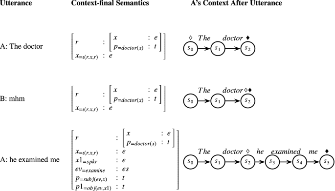

Dig Deep into inner LLM
5/2024 - present
Huamn language exhibits a degree of periodicity in behavior and outputs, which can be analyzed through spectral analysis techniques to gain insights into the underlying patterns and dynamics of the LLMs. The potential aspects are water marks, eye tracking optimization and so on.
Periodicity of Large Language Models Details
Research Assistant
Huamn language exhibits a degree of periodicity in behavior and outputs, which can be analyzed through spectral analysis techniques to gain insights into the underlying patterns and dynamics of the LLMs. The potential aspects are water marks, eye tracking optimization and so on.
Under the guidance of Professor Yang Xu, SUSTech, Shen Zhen, Guang Dong, China
5/2024 - present
Compression of Large Language Models Details
Research Assistant
As the scale of large language models (LLMs) continues to grow, the demand for efficient model compression and pruning techniques becomes increasingly critical. However, current approaches either require extensive retraining or involve post-training quantization and pruning, both of which are computationally expensive and consume substantial resources. To trackle this issue, we present BaR (Block-aware Reservation after Post-Training Pruning), a new and effective approach to prune LLMs. Experiments undergo.Work with my research partners in SUSTech and HKU.